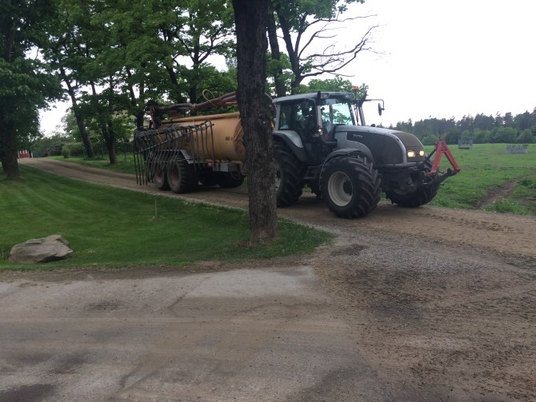
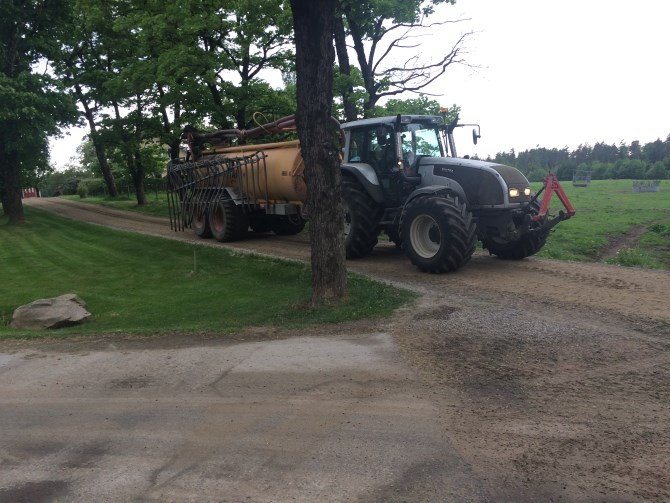

Välkommen till
Grönlid Gård
Företagsinformation
Bilder
Innan ombygget Efter ombygget Kosläppet
Kosläppet
 Nu är våren är
Höstvetet har klarat sig bra i vinter och trivs i solen
Skördetid!
Nu är våren är
Höstvetet har klarat sig bra i vinter och trivs i solen
Skördetid!
 Hackning och hemtransport av gräs.
Kretslopp är en viktig del i lantbruket

Vissa uppskatar verkligen snön
Hackning och hemtransport av gräs.
Kretslopp är en viktig del i lantbruket

Vissa uppskatar verkligen snön
Kontakta
Dan-Otto Andersson
Forsheda Grönlid
33172 Forsheda
Ladugårdsförman sökes
Då min nuvarande förman söker sig till nya uppgifter söker jag hennes ersättare. Tjänsten består av att tillsammans med mig
och gårdens övriga medarbetare fortsätta utveckla gårdens mjölkproduktion. Idag mjölkas korna
av 3 delavalrobotar och vi har paserat 11000 kg i produktion.
Ditt arbete kommer att bestå av daglig övergripande skötsel av kor och ungdjur med
allt vad det innebär, det kommer även innebära visst ledande av medarbetare. Avel, foder och
djurflöde är andra viktiga inslag i ditt arbete.
Jag tror att du har jobbat några
år med mjölkkor och har någon form av eftergymnasial utbildning och känner att det är dags för
lite mer utmanande jobb. Det är ett plus om du har semin utbildning och det är ett krav att du
har körkort.
Tjänsten är en tillsvidaretjänst med provanställning. Tillträde snarast
För ytterligare information kontakta Dan-Otto Andersson 070-5124739 doa@gronlid.se
Nyhet 2017
Under 2017 har vi gjort små förändringar i ladugården, foderstationer har bytt plats, några större djur har tillkommit och några mindre har fått flytta till en annan ladugård. Men den största förändringen kom den 28 september då körde vi igång den 3:e mjölkroboten. I samband med detta har vi utökat till 147 platser för mjölkkor. Vi har redan sett goda förbättringar, antalet mjölkningar ökade ganska fort från 2,2 mjölkningar till 2,9 mjölkningar per ko och dygn.
Projektet har delfinansierats av EU